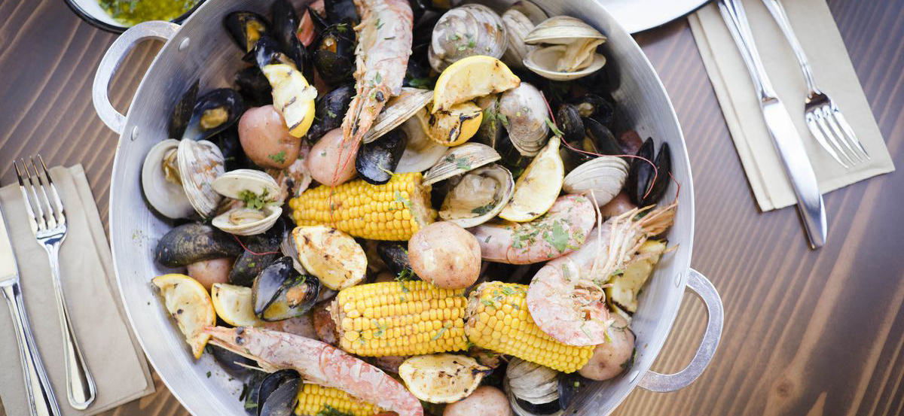
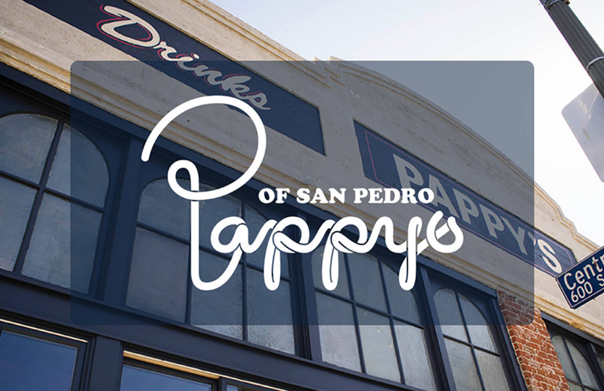
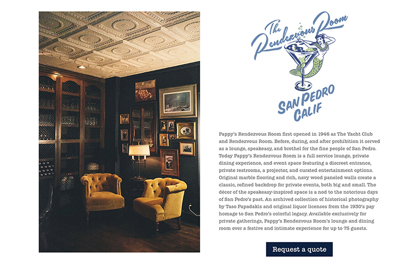
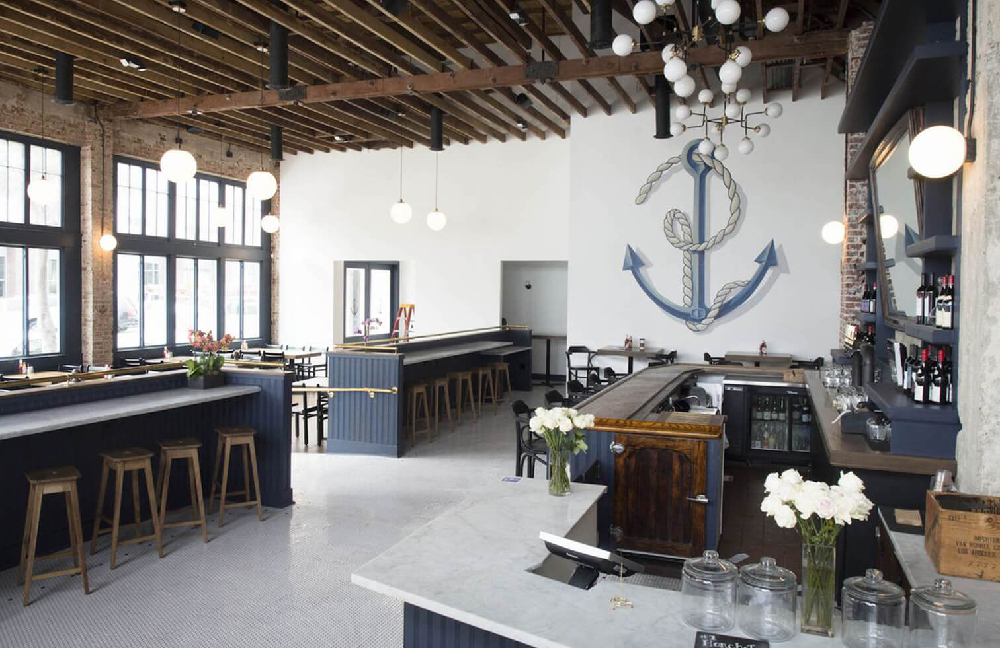
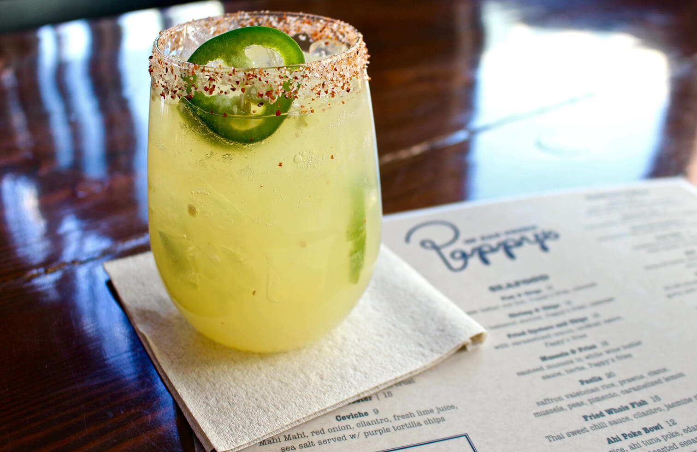
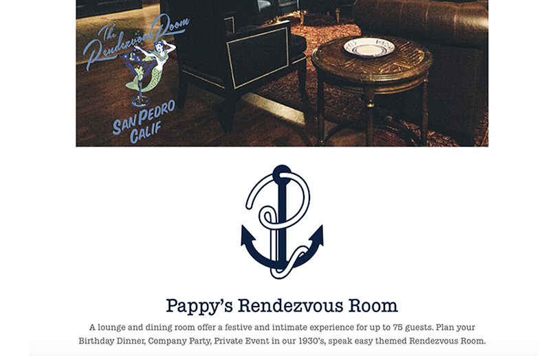

Pappy’s Seafood Restaurant occupied an artfully refurbished building in downtown San Pedro. While freelancing for LA Social Karma, I designed and developed Pappy’s Seafood website to reflect the restaurant's essence and historical significance to the community.



